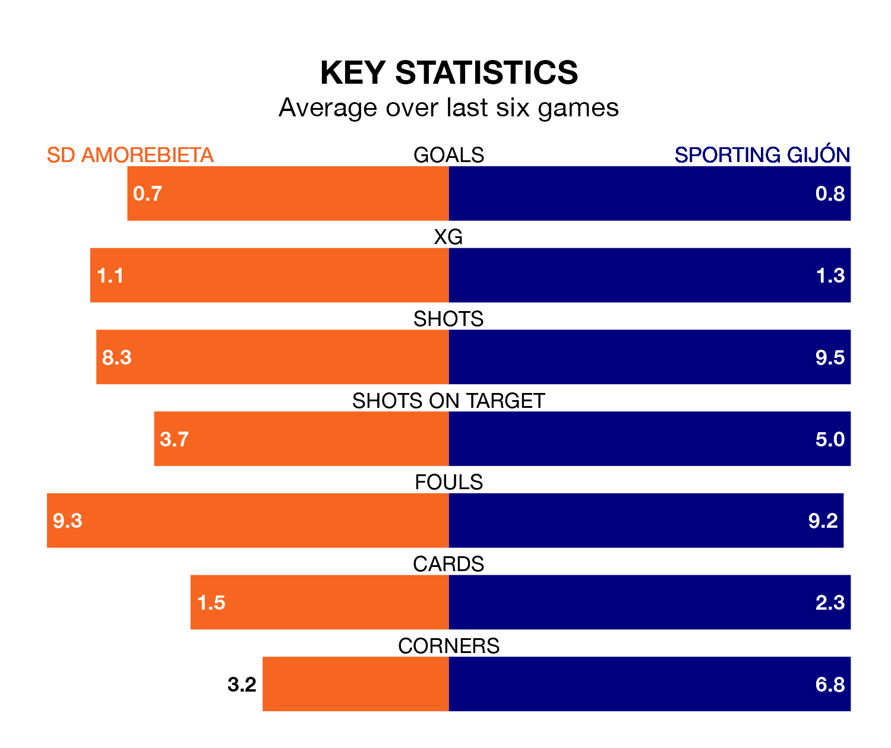

Struggling SD Amorebieta face Sporting Gijón at Instalaciones de Lezama Campo 2 on Sunday looking to build on a win in their last league outing.
After securing all three points with a 1-0 victory over FC Andorra on March 18, Amorebieta sit bottom of the Segunda División.
They travel to play a Sporting side fifth in the standings, who also won their last match, 1-0 against AD Alcorcón, on March 16.
With 23 goals in 31 games so far this season, Amorebieta are the league's joint-second-lowest scorers with 0.7 goals per game. And they are conceding more than average, letting in 38 goals at a rate of 1.2 per game.
Sporting, meanwhile, are average scorers, with 1.1 goals per game. They have conceded 0.8 goals per game.
In Orlando Rubén Yáñez Alabart, the away team can rely on one of the league's safest pair of hands. He has kept 12 clean sheets in his 27 appearances this season in the Segunda División.
In the hosts' net, Pablo Cuñat Campos has seven clean sheets in 26 games. He has conceded a goal every 87 minutes, 30% more often than the 110 minutes between goals for Yáñez Alabart.
In the last five years, Amorebieta and Sporting have played each other on four occasions. Sporting won two of them and they drew twice.
On average, Amorebieta scored 0.8 goals and Sporting 1.2 in those matches.
Their last meeting was on November 11, when they played out a 1-1 draw.
Amorebieta are in reasonable form in the Segunda División, with three wins and two draws from their last six games.
With three wins and a draw over that period, Sporting's form is slightly worse – they have taken 10 points from 18, compared to Amorebieta's 11.
Sunday's match will be refereed by Daniel Jesús Trujillo Suárez, who has taken charge of 14 Segunda División games so far this season, issuing two red cards and booking 41 players. He has awarded three penalties.
The last Amorebieta game Trujillo Suárez refereed was a 2-0 away loss to CD Eldense on October 28. His last Sporting match was their 2-0 win at home against Elche CF on October 4.
Updated: 10:19 (UTC), 22/03/24